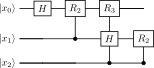

<!DOCTYPE html>
<html xmlns="http://www.w3.org/1999/xhtml">
<head>
  <meta charset="utf-8" />
  <meta name="generator" content="pandoc 3.10.2" />
  <meta name="viewport" content="width=device-width, initial-scale=1.0, user-scalable=yes" />
  <meta name="author" content="QuoNic" />
  <title>qft</title>
  <style>
    /* Default styles provided by pandoc.
    ** See https://pandoc.org/MANUAL.html#variables-for-html for config info.
    */
    html {
      color: #1a1a1a;
      background-color: #fdfdfd;
    }
    body {
      margin: 0 auto;
      max-width: 36em;
      padding-left: 50px;
      padding-right: 50px;
      padding-top: 50px;
      padding-bottom: 50px;
      hyphens: auto;
      overflow-wrap: break-word;
      text-rendering: optimizeLegibility;
      font-kerning: normal;
    }
    @media (max-width: 600px) {
      body {
        font-size: 0.9em;
        padding: 12px;
      }
      h1 {
        font-size: 1.8em;
      }
    }
    @media print {
      html {
        background-color: white;
      }
      body {
        background-color: transparent;
        color: black;
      }
      p, h2, h3 {
        orphans: 3;
        widows: 3;
      }
      h2, h3, h4 {
        page-break-after: avoid;
      }
    }
    p {
      margin: 1em 0;
    }
    a {
      color: #1a1a1a;
    }
    a:visited {
      color: #1a1a1a;
    }
    img {
      max-width: 100%;
    }
    svg {
      height: auto;
      max-width: 100%;
    }
    h1, h2, h3, h4, h5, h6 {
      margin-top: 1.4em;
    }
    h5, h6 {
      font-size: 1em;
      font-style: italic;
    }
    h6 {
      font-weight: normal;
    }
    ol, ul {
      padding-left: 1.7em;
      margin-top: 1em;
    }
    li > ol, li > ul {
      margin-top: 0;
    }
    blockquote {
      margin: 1em 0 1em 1.7em;
      padding-left: 1em;
      border-left: 2px solid #e6e6e6;
      color: #606060;
    }
    code {
      white-space: pre-wrap;
      font-family: Menlo, Monaco, Consolas, 'Lucida Console', monospace;
      font-size: 85%;
      margin: 0;
      hyphens: manual;
    }
    pre {
      margin: 1em 0;
      overflow: auto;
    }
    pre code {
      padding: 0;
      overflow: visible;
      overflow-wrap: normal;
    }
    .sourceCode {
     background-color: transparent;
     overflow: visible;
    }
    hr {
      border: none;
      border-top: 1px solid #1a1a1a;
      height: 1px;
      margin: 1em 0;
    }
    table {
      margin: 1em 0;
      border-collapse: collapse;
      width: 100%;
      overflow-x: auto;
      display: block;
      font-variant-numeric: lining-nums tabular-nums;
    }
    table caption {
      margin-bottom: 0.75em;
    }
    tbody {
      margin-top: 0.5em;
      border-top: 1px solid #1a1a1a;
      border-bottom: 1px solid #1a1a1a;
    }
    th {
      border-top: 1px solid #1a1a1a;
      padding: 0.25em 0.5em 0.25em 0.5em;
    }
    td {
      padding: 0.125em 0.5em 0.25em 0.5em;
    }
    header {
      margin-bottom: 4em;
      text-align: center;
    }
    #TOC li {
      list-style: none;
    }
    #TOC ul {
      padding-left: 1.3em;
    }
    #TOC > ul {
      padding-left: 0;
    }
    #TOC a:not(:hover) {
      text-decoration: none;
    }
    span.smallcaps{font-variant: small-caps;}
    div.columns{display: flex; gap: 1.5em;}
    div.column{flex: auto;}
    @media screen {
    div.columns{gap: min(4vw, 1.5em);}
    div.column{overflow-x: auto;}
    }
    div.hanging-indent{margin-left: 1.5em; text-indent: -1.5em;}
    /* The extra [class] is a hack that increases specificity enough to
       override a similar rule in reveal.js */
    ul.task-list[class]{list-style: none;}
    ul.task-list li input[type="checkbox"] {
      font-size: inherit;
      width: 0.8em;
      margin: 0 0.8em 0.2em -1.6em;
      vertical-align: middle;
    }
  </style>
  <script defer="" src="" type="text/javascript"></script>
</head>
<body>
<header id="title-block-header">
<h1 class="title">qft</h1>
<p class="author">QuoNic</p>
</header>
<div class="center">
<p><strong>Algorithms / 算法</strong> | 难度：中级 | 预计时间：15
分钟</p>
</div>
<h1 id="为什么需要">为什么需要？</h1>
<p>量子傅里叶变换（QFT）是量子算法的核心组件，是许多量子算法的基础。</p>
<h2 id="经典局限">经典局限</h2>
<p>̱</p>
<ul>
<li><p>经典 FFT：<span class="math inline">\(O(N \log N)\)</span>
时间复杂度</p></li>
<li><p>对于 <span class="math inline">\(N=2^n\)</span>，经典需要 <span
class="math inline">\(O(n 2^n)\)</span> 次操作</p></li>
</ul>
<h2 id="量子优势">量子优势</h2>
<p>̱</p>
<ul>
<li><p>QFT：<span class="math inline">\(O(n^2)\)</span>
时间复杂度（指数加速）</p></li>
<li><p>是量子相位估计、Shor 算法的核心</p></li>
<li><p>可以高效计算离散傅里叶变换</p></li>
</ul>
<h2 id="实际应用">实际应用</h2>
<p>̱</p>
<ul>
<li><p>量子相位估计（QPE）</p></li>
<li><p>Shor 算法（大数分解）</p></li>
<li><p>量子模拟（哈密顿量模拟）</p></li>
</ul>
<h1 id="快速上手">快速上手</h1>
<pre style="python"><code>from quonic import qgate, qshow
from quonic.gates import H, Rz
import math

# 3-qubit QFT
qgate(H, 0)
qgate(Rz(math.pi/2), 1)
qgate(Rz(math.pi/4), 2)
qshow()</code></pre>
<p><strong>预期输出</strong>：</p>
<pre><code>backend: native | shots: 1024
Result:
  |000&gt;    128  ( 12.5%)  ####
  |001&gt;    128  ( 12.5%)  ####
  |010&gt;    128  ( 12.5%)  ####
  |011&gt;    128  ( 12.5%)  ####
  |100&gt;    128  ( 12.5%)  ####
  |101&gt;    128  ( 12.5%)  ####
  |110&gt;    128  ( 12.5%)  ####
  |111&gt;    128  ( 12.5%)  ####</code></pre>
<h1 id="原理详解">原理详解</h1>
<h2 id="电路图">电路图</h2>
<div class="center">
<p></p>
</div>
<h2 id="数学推导">数学推导</h2>
<p>QFT 将计算基态变换为傅里叶基态： <span
class="math display">\[\begin{equation}
QFT|j\rangle = \frac{1}{\sqrt{N}} \sum_{k=0}^{N-1} e^{2\pi ijk/N}
|k\rangle
\end{equation}\]</span></p>
<p>对于 <span class="math inline">\(n\)</span> 量子比特，QFT
可以分解为： <span class="math display">\[\begin{equation}
QFT = (H \otimes R_2 \otimes R_3 \otimes \cdots \otimes R_n) \cdot
\text{CNOT gates}
\end{equation}\]</span></p>
<p>其中 <span class="math inline">\(R_k = \begin{pmatrix} 1 &amp; 0 \\ 0
&amp; e^{2\pi i/2^k} \end{pmatrix}\)</span></p>
<h2 id="几何解释">几何解释</h2>
<p>QFT 在 Bloch
球上将计算基态旋转到傅里叶基态。每个量子比特的相位被编码了频率信息。</p>
<h1 id="代码详解">代码详解</h1>
<pre style="python"><code>from quonic import qgate, qshow
from quonic.gates import H, Rz
import math

# QFT circuit
qgate(H, 0)           # Hadamard on q0
qgate(Rz(math.pi/2), 1)  # Rz(pi/2) on q1
qgate(Rz(math.pi/4), 2)  # Rz(pi/4) on q2
qshow()</code></pre>
<h1 id="进阶用法">进阶用法</h1>
<h2 id="场景-1完整-qft-电路">场景 1：完整 QFT 电路</h2>
<pre style="python"><code># Full QFT with controlled rotations
qgate(H, 0)
qgate(Rz(math.pi/2), 1)
qgate(Rz(math.pi/4), 2)
qgate(CX, 1, 0)
qgate(Rz(-math.pi/2), 0)
qgate(CX, 2, 0)
qgate(Rz(-math.pi/4), 0)
qshow()</code></pre>
<h2 id="场景-2qft-用于相位估计">场景 2：QFT 用于相位估计</h2>
<pre style="python"><code># QFT for phase estimation
# Prepare eigenstate
qgate(X, 3)
# Apply controlled-U gates
qgate(CU, 0, 3)
qgate(CU, 1, 3)
qgate(CU, 2, 3)
# Apply inverse QFT
qgate(H, 2)
qgate(Rz(-math.pi/2), 1)
qgate(Rz(-math.pi/4), 0)
qshow()</code></pre>
<h1 id="适用场景">适用场景</h1>
<h2 id="量子相位估计">量子相位估计</h2>
<p>QFT 是量子相位估计的核心组件，用于估计酉算子的本征值。</p>
<h2 id="shor-算法">Shor 算法</h2>
<p>Shor 算法使用 QFT 来寻找周期，从而实现大数分解。</p>
<h2 id="量子模拟">量子模拟</h2>
<p>QFT 用于量子模拟中的频率分析。</p>
<h1 id="常见问题">常见问题</h1>
<h2 id="qft-和经典-fft-有什么区别">QFT 和经典 FFT 有什么区别？</h2>
<p>QFT 是量子算法，时间复杂度 <span
class="math inline">\(O(n^2)\)</span>；经典 FFT 是经典算法，时间复杂度
<span class="math inline">\(O(N \log N)\)</span>。QFT 提供指数加速。</p>
<h2 id="qft-需要多少量子比特">QFT 需要多少量子比特？</h2>
<p>QFT 需要 <span class="math inline">\(n\)</span> 个量子比特来处理
<span class="math inline">\(N=2^n\)</span> 个数据点。</p>
<h2 id="qft-的输出是什么">QFT 的输出是什么？</h2>
<p>QFT 的输出是输入态的傅里叶变换，以量子态的形式编码。</p>
<h1 id="学习路径">学习路径</h1>
<h2 id="前置知识">前置知识</h2>
<p>̱</p>
<ul>
<li><p>量子比特和叠加态</p></li>
<li><p>Hadamard 门和相位门</p></li>
<li><p>量子测量</p></li>
</ul>
<h2 id="继续学习">继续学习</h2>
<p>̱</p>
<ul>
<li><p>量子相位估计（QPE）</p></li>
<li><p>Shor 算法</p></li>
<li><p>量子模拟</p></li>
</ul>
<h1 id="完整示例代码">完整示例代码</h1>
<h2 id="示例-1基本-qft">示例 1：基本 QFT</h2>
<pre style="python"><code>from quonic import qgate, qshow
from quonic.gates import H, Rz
import math

qgate(H, 0)
qgate(Rz(math.pi/2), 1)
qgate(Rz(math.pi/4), 2)
qshow()</code></pre>
<h1 id="下载">下载</h1>
<p></p>
<ul>
<li><p>(https://github.com/ChrisLee0721/QuoNic/blob/main/examples/qft/qft.py)</p></li>
</ul>
</body>
</html>
